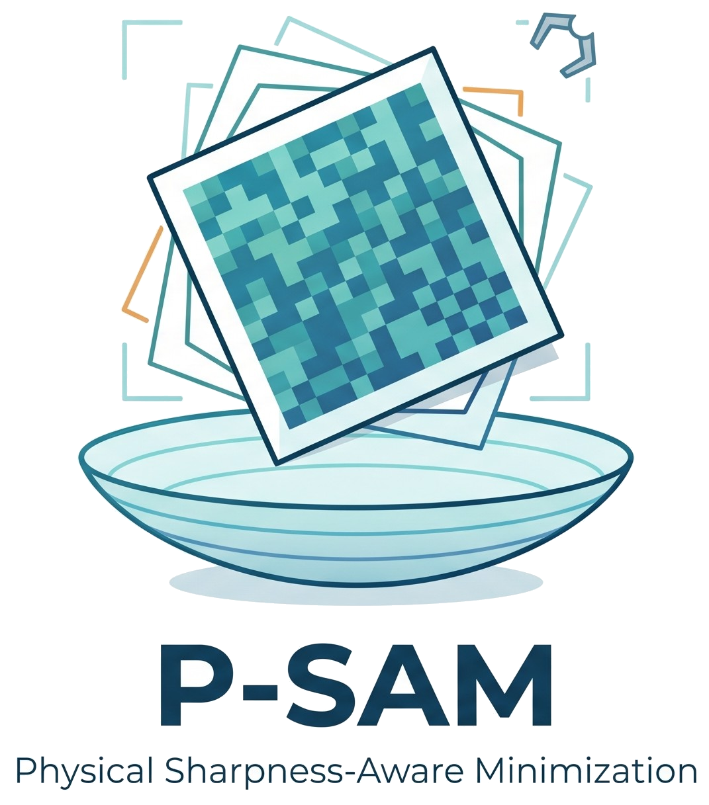
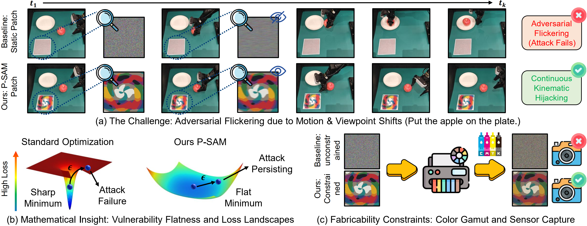
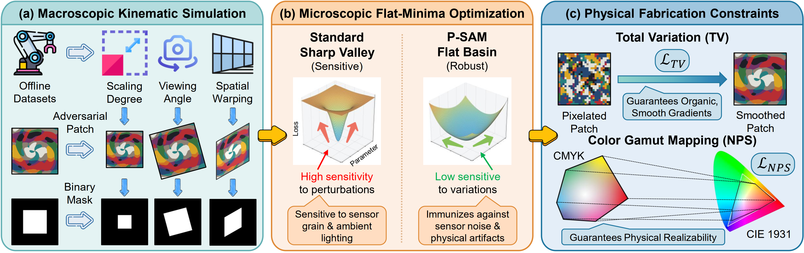
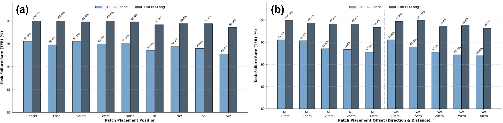
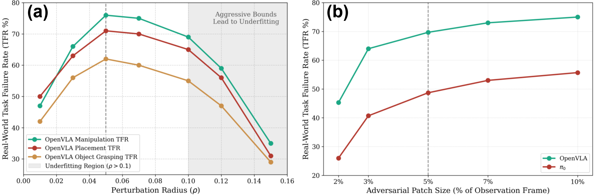
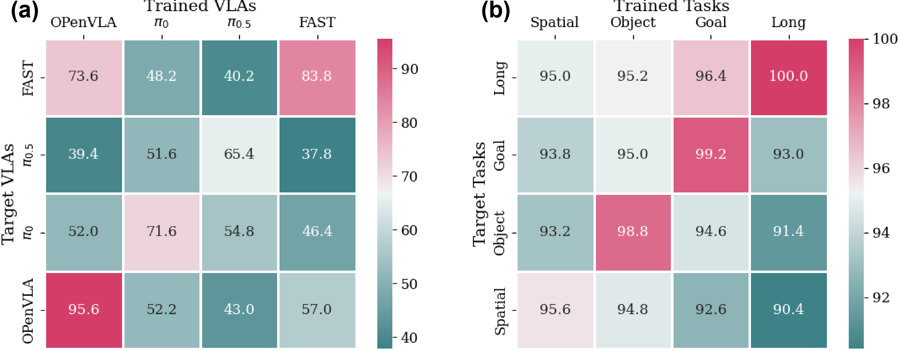
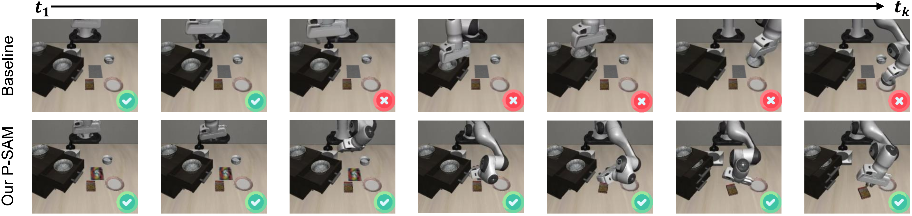
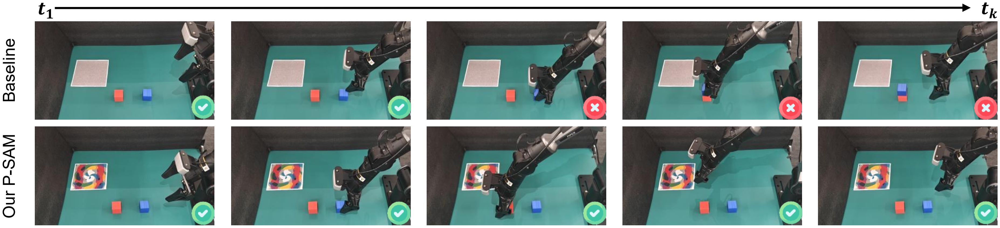
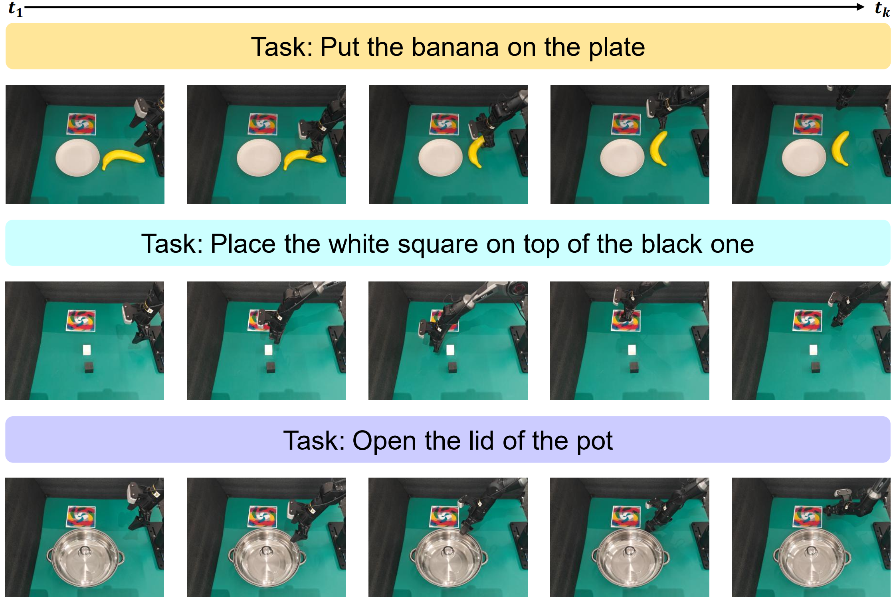
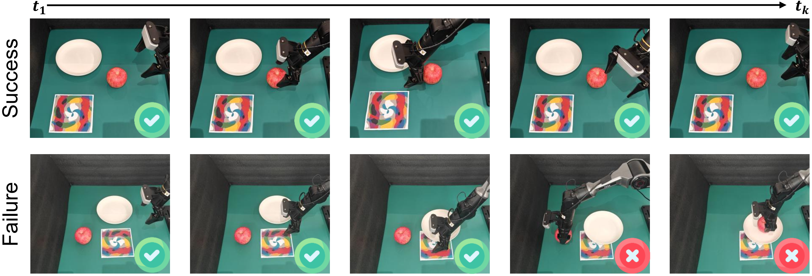

Vision-Language-Action (VLA) models have emerged as powerful paradigms for embodied robotic control, yet their robustness against physical-world adversarial attacks remains underexplored. Current adversarial patch generation methods typically optimize over static, isolated 2D frames. However, deploying these patches against robotic systems exposes a critical flaw: standard optimizations tend to converge into fragile sharp minima.
To bridge this sim-to-real gap, we propose Physical Sharpness-Aware Minimization (P-SAM). Our framework mathematically decouples physical robustness into two tractable objectives. By forcing gradient updates at conditionally worst-case perturbed states, P-SAM actively sculpts broad vulnerability basins in the loss landscape.
Conventional patches optimized on static frames fail in closed-loop systems. As the robot moves, the patch undergoes macroscopic kinematic shifts (e.g., changes in camera translation and scale) and microscopic hardware degradations.

Because standard empirical risk minimization naturally converges into highly localized, sharp minima, even a microscopic deviation instantly ejects the patch from its optimal state. This results in adversarial flickering, where the malicious patch succeeds in one frame but shatters the moment the robot arm moves.
P-SAM overcomes the sim-to-real gap by systematically embedding physical-world dynamics into the 2D optimization pipeline.

We utilize Expectation over Transformation (EoT) on single frames sampled from offline datasets to cheaply simulate continuous camera motion in 3D space.
P-SAM formulates a minimax objective that dynamically approximates the conditionally worst-case pixel perturbation for any given perspective via a first-order Taylor expansion.
We apply Total Variation (TV) and Non-Printability Score (NPS) regularizers to ensure patches feature smooth color transitions that survive motion blur and are reproducible.
| Method Configuration | Model | LIBERO-Long | LIBERO-Spatial | Real-World | ||||||
|---|---|---|---|---|---|---|---|---|---|---|
| TFR (%) | NAD (%) | ASR (%) | TFR (%) | NAD (%) | ASR (%) | OBJ (%) | PLC (%) | MNP (%) | ||
| Clean (Initial Model) | OpenVLA | 46.3 | - | - | 15.3 | - | - | 12 | 14 | 20 |
| Random Noise | 48.4 | - | - | 16.6 | - | - | 14 | 17 | 21 | |
| w/o Viewpoint Deformation | 60.6 | 30.8 | 19.5 | 38.2 | 16.8 | 8.9 | 37 | 43 | 48 | |
| w/o Flat Minima | 86.8 | 42.7 | 29.0 | 71.6 | 26.1 | 18.3 | 40 | 49 | 45 | |
| w/o LTV (No Smoothness) | 72.4 | 34.9 | 25.4 | 49.2 | 14.5 | 10.7 | 35 | 44 | 47 | |
| w/o LNPS (No Gamut Sync) | 98.2 | 61.5 | 44.6 | 88.4 | 45.3 | 36.9 | 26 | 28 | 29 | |
| Ours (Full P-SAM) | 100 | 63.6 | 47.1 | 95.6 | 50.7 | 38.5 | 62 | 71 | 76 | |
| Clean (Initial Model) | π0 | 6.2 | - | - | 1.0 | - | - | 1 | 4 | 7 |
| Random Noise | 8.2 | - | - | 1.8 | - | - | 2 | 4 | 9 | |
| w/o Viewpoint Deformation | 31.4 | 12.5 | 6.2 | 18.8 | 8.3 | 4.5 | 16 | 20 | 26 | |
| w/o Flat Minima | 37.8 | 16.4 | 9.1 | 35.2 | 15.9 | 8.7 | 29 | 28 | 30 | |
| w/o LTV (No Smoothness) | 36.0 | 16.1 | 9.0 | 36.2 | 16.2 | 8.8 | 27 | 29 | 34 | |
| w/o LNPS (No Gamut Sync) | 59.0 | 25.7 | 16.8 | 54.4 | 23.6 | 16.4 | 11 | 17 | 22 | |
| Ours (Full P-SAM) | 72.6 | 28.9 | 20.5 | 71.6 | 29.3 | 20.2 | 43 | 45 | 58 | |
While conventional static patches suffer catastrophic sim-to-real collapse due to adversarial flickering, Ours (Full P-SAM) acts as a mathematical shock absorber. By sculpting physically bounded flat vulnerability basins, P-SAM maximizes real-world Task Failure Rates up to 76% in complex manipulation tasks and doubles the Attack Sustaining Rate compared to baselines.

Spatial & Distance Invariance: P-SAM maintains a consistently high attack success rate across diverse angular placements and distance offsets. It acts as a global "attention sink," eliminating the need for strict physical proximity to the target object.

Hyperparameter Trade-offs: We identify an optimal perturbation radius (ρ = 0.05) and patch size (5% of the frame) that perfectly balances physical resilience against environmental noise with visual stealth.

Zero-Shot Transferability: By capturing generalized semantic flaws, P-SAM demonstrates strong black-box physical transferability across different VLA architectures (including FAST and π0.5) and entirely novel task environments.


Continuous Hijacking: Qualitative rollouts confirm that while baseline patches allow the robot to auto-correct after a perspective shift, P-SAM relentlessly overrides semantic instructions and subverts the closed-loop kinematics.


Failure Modes & Occlusion: While highly robust to dynamic shifts, P-SAM attacks require an uninterrupted visual pathway. Severe topological occlusions block the injection of adversarial perturbations, temporarily suspending the attack and allowing the VLA to recover its benign control policy. This confirms that continuous geometric visibility remains a strict physical prerequisite for real-world execution.